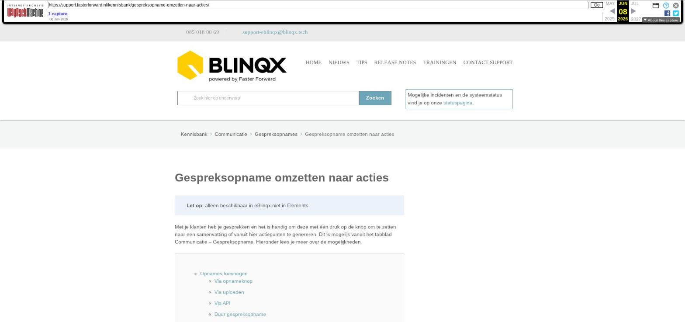

Gespreksopname omzetten naar acties

Tekstinhoud
Gespreksopname omzetten naar acties
Let op: alleen beschikbaar in eBlinqx niet in Elements
Met je klanten heb je gesprekken en het is handig om deze met één druk op de knop om te zetten naar een samenvatting of vanuit hier actiepunten te genereren. Dit is mogelijk vanuit het tabblad Communicatie – Gespreksopname. Hieronder lees je meer over de mogelijkheden.
Opnames toevoegen
Via opnameknop
Via uploaden
Via API
Duur gespreksopname
Gespreksopname opnieuw indienen
Acties uitvoeren
Transcript inzien
Samenvatting maken en bekijken
Aanmaken via sterretjesicoon
Aanmaken via workflowpijl
Samenvatting bekijken
Samenvatting als concept e-mail klaarzetten
Samenvatting als registratie opslaan
Taken aanmaken
Slim formulier (Finly) genereren en prefillen
Gespreksopnamen exporteren
Dossierhistorie
Opnames toevoegen
Via opnameknop
Via het het tabblad Communicatie – Gespreksopname kan je een gespreksopname starten. Dit tabblad kan je benaderen vanuit het product of op dossierniveau. Let op: start je op dossierniveau dan is het niet mogelijk om de gespreksopname op een later moment te koppelen aan een product. Eventuele taken of e-mails die hieruit voortkomen kan je wel aan het product koppelen.
Op een opname te starten klik je op de knop 'Opname starten'. Er verschijnt vervolgens een pop-up waar je de opname daadwerkelijk kan starten via 'Start opname'.
Via 'Pauzeer', pauzeer je de opname. De knop verandert dan naar 'Hervatten', waarmee je de opname kan hervatten. Met 'Stop', stop je de opname.
Heb je op 'Stop' gedrukt dan geef je de opname een omschrijving en sla je de opname op.
Let op: de opname neemt alleen jouw microfoon op. Dus bel je via een headset met de klant dan zal datgene wat de klant zegt niet worden opgenomen. Je zal dan het gesprek via luidspreker moeten afspelen om het gehele gesprek op te nemen.
De opname komt na opslaan onder het tabblad Communicatie – Gespreksopname te staan. Deze wordt automatisch omgezet naar een transcript. Let op: dit kan even duren afhankelijk van de grootte van het gesprek. Daarnaast is het belangrijk dat je tijdens het laden op het tabblad Gespreksopname blijft staan. Je kunt eventueel wel in een nieuw tabblad in je browser verder werken.
Via uploaden
Het is ook mogelijk om gesprekken, die je bijvoorbeeld met je telefoon hebt opgenomen, te uploaden. Die doe je via de knop 'Opname uploaden'.
De toegestane bestandstypen zijn MP3, MP4, WAV, webm en ogg. Met deze geüploade gespreksopnames kan je dezelfde acties uitvoeren als gesprekopnames die vanuit eBlinqx zijn gestart. Mocht het niet het juiste bestandstype zijn of deze is te groot dan wordt er een melding getoond bij het uploaden.
Via API
Ook is het mogelijk om via de API gespreksopnames in het dossier te zetten. De gesprekken die via de API binnenkomen worden automatisch omgezet naar een transcript. Een omschrijving, product, lengte en opnamedatum en tijd kunnen optioneel meegegeven worden. Wordt dit niet meegegeven dan blijven deze velden leeg. De omschrijving wordt dan de bestandsnaam. Ook kan je meegeven dat er direct een samenvatting gegenereerd moet worden.
In het dossier wordt een melding getoond als er een gespreksopname aan het dossier is toegevoegd via de API.
Duur gespreksopname
De opname mag maximaal 2 uur duren. Is de opname langer dan kan deze niet omgezet worden naar transcript en zijn er geen vervolgacties mogelijk.
Gespreksopname opnieuw indienen
Het kan gebeuren dat het de eerste keer niet is gelukt om de gespreksopname om te zetten naar transcript. Bij de gespreksopname komt dan een retry-icoon te staan en je wordt erop geattendeerd door middel van een blauwe melding. Je kunt op deze knop klikken om de de gespreksopname opnieuw in te dienen. Deze knop is niet beschikbaar als er al een transcript is en het originele verzoek nog geen 5 minuten geleden is.
Acties uitvoeren
Transcript inzien
Als de gespreksopname wordt opgeslagen wordt deze automatisch omgezet naar een transcript. De transcript kan je bekijken via het loepicoon.
Samenvatting maken en bekijken
De samenvatting kan op twee manieren aangemaakt worden, namelijk via het 'sterretjesicoon' en via de workflowpijl.
Aanmaken via sterretjesicoon
Maak je de samenvatting aan via het sterretjesicoon dan kan je geen voorwaarden voor hoe de samenvatting opgesteld moet worden meegeven. Het systeem maakt dan een standaard samenvatting aan.
Aanmaken via workflowpijl
Je kunt ook een samenvatting aanmaken via de workflowpijl. Je klikt hierop en vervolgens op 'Samenvatting genereren'. Er verschijnt dan een nieuw scherm waar je zelf extra input kan geven voor hoe de samenvatting opgesteld moet worden, bijvoorbeeld 'de samenvatting moet geschikt zijn voor iemand zonder financiële kennis of achtergrond'. Klik je vervolgens weer op 'Samenvatting genereren' dan wordt de samenvatting aangemaakt.
Samenvatting bekijken
De aangemaakte samenvatting is te bekijken via het registratie-icoon.
Samenvatting als concept e-mail klaarzetten
Is de samenvatting aangemaakt dan kan je deze per e-mail verzenden. Dit kan door middel van het envelopicoon of door middel van de workflowpijl en dan de actie 'Concept e-mail klaarzetten met samenvatting'.
De samenvatting wordt als tekst in de e-mail gezet. Op deze manier kan je eventueel nog zaken aanvullen of informatie verwijderen.
Samenvatting als registratie opslaan
Via de workflowpijl kan je ook kiezen voor 'Samenvatting als registratie opslaan'. De samenvatting wordt dan als registratie opgeslagen. Je kunt deze eventueel wijzigen.
Taken aanmaken
Het is ook mogelijk om vanuit de gespreksopname direct taken aan te maken. Via de workflowpijl klik je dan op 'Taken aanmaken'. Je krijgt vervolgens alle taken te zien die gegenereerd kunnen worden vanuit de opname. Voor het bepalen of het een taak moet zijn, wordt er gekeken of er duidelijke activerende woorden aanwezig zijn. Dit zijn woorden of zinnen die een handeling initiëren, aanzetten tot actie, of instructies geven. Je kunt denken aan werkwoorden als: starten, regelen, plannen, controleren, bevestigen, ontwikkelen, afstemmen, versturen, uitzoeken, implementeren, aanpassen, uitvoeren. Dit geldt ook voor werkwoorden in de gebiedende wijs gebruikt worden bijvoorbeeld moet, laten we, zorg dat, het is nodig om, denk eraan om, niet vergeten te. Als de tekst geen activerende woorden of suggesties voor actie bevat, geef dan wordt er aangegeven "Geen acties geïdentificeerd."
Voor deze taken staat een checkbox die standaard aangevinkt staat. Wil je niet dat er bepaalde taken aangemaakt worden dan kan je de checkbox ervoor uitvinken. Per taak kan je de naam, start- en einddatum, tijd en verantwoordelijke aanpassen. Om dit aan te passen klik je op het wijzigingsicoon achter de taak.
Om de (geselecteerde) taken daadwerkelijk aan te maken klik je op 'Geselecteerde actiepunten omzetten in taken'.
In de omschrijving van de taak staat 'Taak aangemaakt vanuit opname', zodat je weet vanuit waar deze taak is aangemaakt.
Slim formulier (Finly) genereren en prefillen
Een formulier genereren en prefillen doe je door te klikken op de workflowpijl en te kiezen voor 'Slim formulier (Finly) genereren en prefillen'. Vervolgens kan je kiezen welk formulier je wilt aanmaken.
Gespreksopnamen exporteren
Via Export – Dossier is het mogelijk om gegevens van het ene dossier naar het andere dossier te exporteren. Als je een product exporteert waaraan gespreksopnames zijn gekoppeld dan worden ook automatisch de gespreksopnames overgezet naar het andere dossier. Ook is het mogelijk om gespreksopnames die niet aan een product zijn gekoppeld te exporteren.
Dossierhistorie
Bij gebruik van bovenstaande opties wordt er gebruik gemaakt van de Blinqx AI API. Dit wordt opgenomen in de dossierhistorie.
Laatste update: 24 februari 2026
Was deze informatie nuttig?
Ja Nee